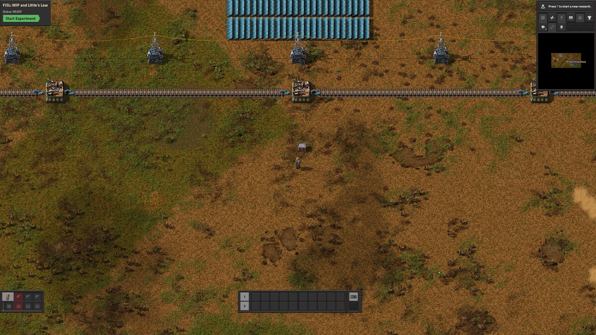
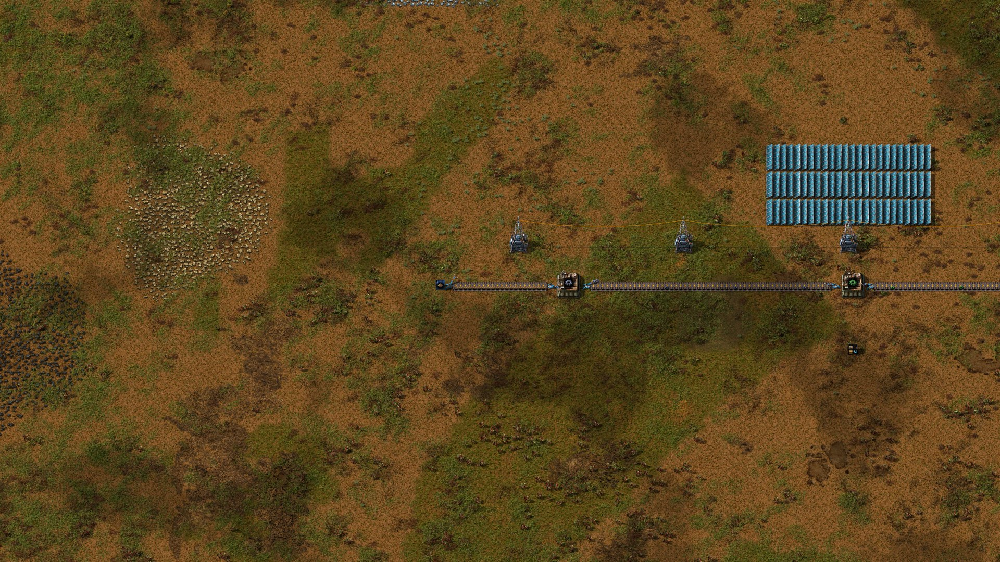
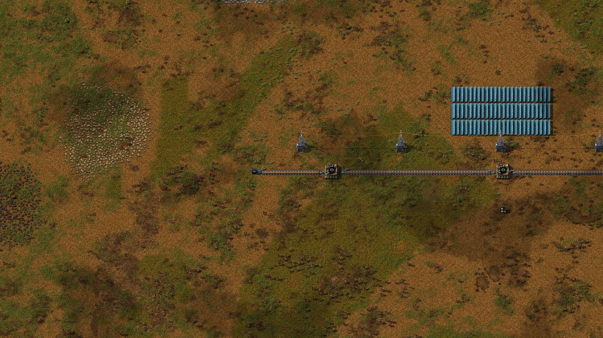
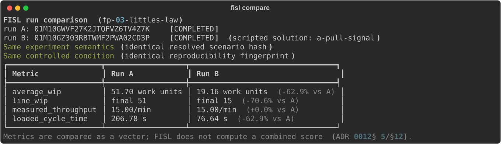

7 Lab 3 — WIP and Little’s Law
Scenario: fp-03-littles-law · two runs of ~12 minutes each
First lab that builds: placing entities from the toolbox, and — for the pull gate — a circuit wire with an enable condition. Practice Range drills d5_enable_condition (and d1/d2 if belts are new to you).
You will operate a small workpiece line twice: first exactly as you find it, then after making one modification. Between the two runs, three numbers — inventory, output rate, and flow time — will rearrange themselves in a way that is not a coincidence, and the law that binds them is the subject of this lab.
7.1 The system
A conveyor line runs west to east: a blue source chest where raw workpieces enter the system, three machines that transform them in stages (rough → machined → inspected → finished), and an orange sink chest where finished work leaves. The source and sink are laboratory equipment — indestructible, and the exact points where FISL counts material entering and leaving. A toolbox chest near your spawn holds spare belts, inserters, and machines; its contents are ordinary materials and are never counted in any measurement.
Three quantities are measured, all against the same declared boundary:
- WIP (work in process): workpieces that have entered at the source and not yet left at the sink — wherever they physically are: on belts, in machine buffers, mid-craft, even in your pockets.
- Throughput (TH): finished workpieces leaving through the sink, per minute, over the measured window.
- Cycle time (CT): how long a workpiece spends inside the system.
During the run you can see only the current WIP. Everything else is withheld until the experiment ends — instrumentation that announces the answer would spoil the diagnosis.
7.2 Run 1 — observe

Start the experiment and don’t change anything. Spend the twelve minutes walking the line (hold Alt for the detail overlay):
- Follow the belt west from the middle. What state is the first belt segment in? Estimate how many workpieces are sitting on it.
- Watch each machine for thirty seconds. Which one is always busy? What are the other two doing most of the time?
- Watch the WIP number on the panel. Is it moving?
Afterward, read your report (fisl report runs/<run-id>). A reference run of this exact scenario produced:
| Metric | Value |
|---|---|
| average WIP | 51.70 work units |
| throughput | 15.00 / min |
| cycle time (derived) | 206.78 s |
Now a calculation you can do in your head: total processing time per workpiece — the time machines actually spend working on it — is about 8 seconds (4 + 2 + 2). Yet each workpiece spent 207 seconds inside the system. Where were the other 199 seconds?
You walked past the answer: the packed input belt. Over 95% of each workpiece’s life was spent waiting in a queue, and nearly all of the system’s inventory was that queue.

7.3 The theory you just watched
Multiply throughput by cycle time, in consistent units:
That is your average WIP, exactly. This is Little’s Law:
It holds for any stable flow system with a declared boundary — factories, hospitals, ticket queues, software teams — with no assumptions about what happens inside. It is an accounting identity of flow, and you have now measured all three of its terms simultaneously in a system you could walk around in.
Read it as a constraint: the three quantities are not independent. If throughput is pinned by a bottleneck (yours is: the first machine can only do one workpiece per 4 s, i.e. 15/min), then WIP and cycle time are the same decision. Carry 52 units of inventory and your flow time must be ~207 s. Want a 30-second flow time? Then you may hold at most units of WIP — no clever routing can evade this.
7.4 Run 2 — intervene
The queue exists because the source inserter admits work as fast as it can swing, while the bottleneck consumes one workpiece per 4 s. The fix is not a faster machine — it’s admitting work at the rate the system actually consumes it. Factorio’s circuit network lets you build exactly that.
One question decides everything: where should the signal watch? The queue forms where work waits — immediately upstream of the bottleneck. A gate anywhere else only stops the queue growing past the gate; everything between the gate and the machine still packs solid.
Start a new run, and before pressing Start:
- Walk to the source inserter (beside the blue chest).
- Select the red wire tool from the shortcut strip (bottom right; enable it via the
…menu if hidden). - Click the inserter, then click a belt tile about halfway to the first machine — circuit wire only reaches 9 tiles, and the full span is 10, so the wire needs one relay hop. Then click the last belt tile before the first machine’s input inserter. Press Q to put the wire away. (If a click refuses to attach the wire, you’re stretching past its reach — pick a closer tile.)
- Open the last belt tile (the gate): enable Read belt contents, mode Hold. Open the halfway tile too and make sure its circuit options are all off — it only carries the wire.
- Open the source inserter: set Enable/disable with the condition rough workpiece < 2. (Why 2 and not 1? The belt trip from the source takes ~5 s while the machine eats one workpiece per 4 s — a staging allowance of one extra piece covers the travel time so the bottleneck never starves. Try 1 later and watch what happens to throughput.)

You have built a pull signal: a workpiece is admitted only while fewer than two are staged at the machine. Press Start and watch the same twelve minutes — the belt stays nearly empty, and the WIP number tells the story live.
Then compare your two attempts:
fisl compare runs/<run-1> runs/<run-2>Predict before you look: what happened to throughput? To WIP? To cycle time? Check every prediction against the deltas — and check that Little’s Law still binds all three numbers in run 2.
…your gate is watching a tile near the source. Walk the line: everything downstream of your monitored tile is still packed. The signal must watch the point where the queue actually forms. This exact mistake was made by the first version of this lab’s own reference solution — it measured avg WIP 41.66 instead of 19.16. Diagnosing a control system by walking the physical line is itself the skill being taught here.
…your wire never connected. An inserter with an enable condition but no circuit network ignores the condition completely — the run comes out identical to the baseline, down to the last decimal. The usual cause is wire reach: a red wire spans at most 9 tiles, and the direct inserter-to-gate span here is 10, so it needs the relay hop from step 3. Walk the wire and check both segments are actually drawn. This, too, was a mistake the reference solution made (version 2 wired the distance directly; the script reported success and changed nothing). A control system has two halves — the decision and the actuation path — and configuring the first does nothing without the second.
And why doesn’t WIP go to ~2? Walk the line in run 2 and count what’s left: one or two workpieces staged at the gate, a few moving on belts, one inside each machine. This line is ~90 tiles long — about 48 s of pure belt travel — so even a perfect pull system must carry workpieces of in-transit inventory. Conveyors are inventory. The run-1 queue was waste; the run-2 residual is transportation. Little’s Law prices both identically.
7.5 Debrief
- Throughput did not change. Why not? What would change it?
- Nearly all cycle time in run 1 was queueing. Is queue time always waste? What did the big queue buy the system, if anything, in this deterministic world? (Hold this question — it returns with force when variability enters the course.)
- The intervention limited admission, not capacity. Name a real system you know that controls flow time this way — and one that instead lets the queue grow.
- Your factory processed work in 8 s but delivered in 207 s. If a customer asked “why does my order take so long,” what is the honest answer?
7.6 What the simulation assumed away
This world is deterministic: machines never fail, never vary, and the supply never fluctuates. In such a world a large input queue is pure waste — it buys nothing. Real systems hold inventory partly to absorb variability, and whether a buffer is waste or insurance is the central question of the variability course that follows. Do not conclude from this lab that all inventory is bad; conclude that inventory has a price denominated in flow time, and that the price is exact: CT = WIP / TH.

fisl compare of the push baseline vs the pull solution.
- The reference intervention is committed as
scenarios/factory-physics/fp03-littles-law/solutions/a-pull-signal/and the whole lab dataset regenerates with one deterministic command:fisl solutions scenarios/factory-physics/fp03-littles-law --run --json course/data/lab-03-comparison.json— rerun it after any scenario or baseline change and re-check the numbers cited in this chapter. - Baseline reference numbers come from the committed verification run
01M10GTKR13N2RCW3AYCPVFS65(2026-08-27 baseline revision). Measured pull-solution result (run01M10GZ303RBTWMF2PWA02CD3P, solution v3): TH unchanged at 15.00/min, avg WIP 19.16 (−62.9%), CT 76.64 s — right on the transit floor predicted in the solution README. Every number in this chapter has now reproduced identically across two independently built baselines and multiple machines (the original verified run was01M0XP8VJ78KXRC8DB6BATBW39; a human-played run matched it bit-for-bit). - The ~20% “gate near the source” failure in the callout is real: it was version 1 of the reference solution (run
01M0Y063ACYSD8JWRF78EJAWTF). Learners who make it are in good company; send them to walk the line. - The “nothing changed at all” failure is also real: version 2 of the reference solution wired the 10-tile span directly, past the 9-tile circuit wire reach —
connect_to()returns false without raising, and run01M0Y31VW4X12TBZN8S0HQA4T0was bit-identical to baseline. Send those learners to walk the wire. - Common learner friction: selecting the red wire tool (walk them to the shortcut
…menu), and pressing F near belts (vacuums workpieces into the inventory — harmless to the ledger, but confusing). - Screenshot capture: run windowed (
--window-size 1680x950), hold Alt for the info overlay, zoom to frame the line; plain OS screenshots intocourse/images/lab-03/with the filenames listed in that folder’s README, then uncomment the figure blocks in this chapter.